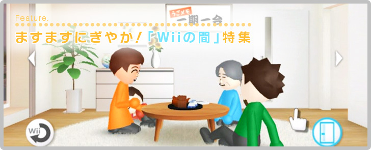
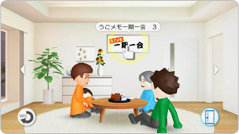
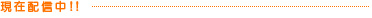
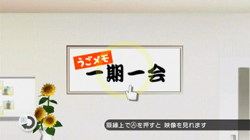

サービス開始以来、ずっと「一期一会」のままだった『Wiiの間』にある額縁。
それが、この2010年8月7日から「うごメモ一期一会」に変わっています。
額縁上でAボタンを押すと、ニンテンドーDSiウェア『うごくメモ帳』で作成され、『うごメモシアター』(※)に投稿された大量の「うごメモ（パラパラマンガ）」の中から、厳選された作品をテレビの大きな画面で見ることができます。

(※)うごメモシアターは「株式会社はてな」が運営するメモ作品公開掲示板サイトです。

「うごメモ一期一会」は毎週更新されます。紹介される「うごメモ」は、驚くようなアイデアに満ちたクオリティの高い作品ばかり。また、自分の投稿作品が『Wiiの間』で紹介されることもあるかもしれません。『うごくメモ帳』ファンの方も、プレイしたことがない方も、ぜひ一度『Wiiの間』で、みんなの作品を楽しんでみてください！

「うごメモ一期一会」スタートにあたって、「うごメモ」のスタッフからのコメントです。

![Contents[1]新しくなった「間」やおすすめコンテンツをご紹介](../common-img/f_bg01.jpg "Contents[1]新しくなった「間」やおすすめコンテンツをご紹介")
![Contents[2]Wiiの間株式会社スタッフに、リニューアルについてのコメントを頂きました](../common-img/f_bg02.jpg "Contents[2]Wiiの間株式会社スタッフに、リニューアルについてのコメントを頂きました")